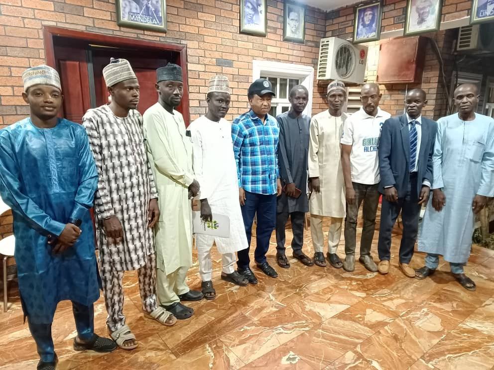

Posted on November 25, 2024
In what could be defined as spurring and thrilling gestures to a newly formed nongovernmental organisation known as Arewa Progressive Eagle Movement which seeks to complement efforts of governments in addressing socioeconomic challenges bedeviling Northern Nigeria, the Kaduna based famous human rights activist and advocate for social justice, Comrade Shehu Sani has expressed commitment to supporting the organisation. Comrade Shehu Sani who represented Kaduna Central Senatorial District at the National Assembly (8th Senate) made the commitment in Kaduna when a delegation of the organisation paid a courtesy visit at his personal residence.
A high powered delegation of the Arewa Progressive Eagle Movement (APEM) led by her Chairman and Chief Executive Officer, Babangida Ibrahim Dauda took advantage of the opportunity to intimate Distinguished Senator Shehu Sani of programmes and activities of the Organisation. Challenges identified to be addressed by APEM include desertification and other ecological challenges in Katsina State in the North-West; shear butter Value-Chain in Adamawa State, North East and Mango seed waste processing in Plateau State of the North Central.
Impressed by the thoughts, initiatives and ingenuity of the founders of APEM, the Distinguished Senator Sani commended them for summoning the courage but accordingly admonished APEM on how to improve on its programmes by concentrating on addressing certain menaces at a time to avoid biting more than it could chew.
The Distinguished Senator however pledged his support to the organisation in all forms at all times.
He further charged leaders and members of APEM to be focused and determined in pursuing their goals and objectives irrespective of any daunting distractions or hurdles that they may encounter in the noble cause they have embarked upon stressing that rendering selfless service requires a great deal of patience and perseverance.
The interactive session was fruitful as the desired responses were elicited from the prominent Comrade Senator.
Members of the delegation also seized the opportunity to socialise and snapped historic photograph with Distinguished Senator Sani.
APEM describes the moment as memorable and landmark achievement in its quest for an economically viable and socially upright Northern Nigeria.
The organisation reiterates readiness to partner with responsible individuals and organisations for a better North.
APEM, therefore calls on relevant stakeholders in the Region to collaborate with it towards addressing the nagging challenges bedeviling the Region.
Signed:
Adamu Maikasuwa Saluwe
Director, Public Affairs and Corporate Communications.